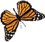

Muôn hoa đua sắc
Đã là hoa thì hoa nào cũng đẹp. Kể từ những đoá hoa dân dã giản dị bình thường. Hoa sim, hoa mua tím biếc sườn đồi. Hoa cà tím biếc vườn quê. Hoa lục bình tím biếc trên dòng sông. Hoa súng tím biếc ao làng. Hoa xoan tím biếc những chiều xóm vắng…. Hoa gạo đỏ đầu làng, hoa phượng đỏ trời góc phố. Hoa mào gà, hoa dong riềng đỏ góc vườn ai. Hoa cau, hoa dừa trắng phau lưng trời. Những loài hoa dân giả muôn màu muôn sắc cũng đẹp huống chi là các loài hoa quý phái.
Một trong những loài hoa quý phái là hoa lan. "Vua thưởng lan, quan thưởng trà". Cái hương lan - " cái hương thuỷ quái gì mà mê đắm lòng người đến thế". Phong lan thơm sực nức, nồng nàn, gần gũi. Địa lan thanh cao, nhẹ nhõm, lúc thắm thiết, sực nức, lúc nhạt nhoà xa xăm. Đoá bạch ngọc khi nở có màu sáng như chiếc hài của thần vệ nữ tự ngày xưa.
Hoa mai có nhiều loài. Từ ngũ đài hoa - năm cánh vàng rực rỡ đến hoàng tỉ trên 30 cánh. Hoa mai đẹp từ gốc đến cành, sống lâu bền, xếp vào hàng cổ thụ "lão mai độc thọ nhất chi vinh" (thơ cổ). Hoa mai không phô sắc hương mà khiêm tốn dịu dàng, tượng trưng cho cốt cách của người quân tử, chịu được cái giá rét của mùa đông để nở vào một sớm xuân hồng.
Hoa cúc vàng trong hàng tứ quý " tùng, cúc, trúc, mai" tượng trưng cho mặt trời, cho quyền lực. Cúc đại đoá bông to, cành cong lộng lẫy sang trọng, cúc vạn thọ giản dị, bền lâu. Hoa cúc là loại "diệp bất li chi, hoa vô lạc địa", lá cúc không bao giờ rời khỏi cành dẫu đã héo khô, hoa tàn cánh không rụng như người quân tử không xa rời lý tưởng.
Loài hao mang biểu tượng của mùa xuân là hoa đào. Những cánh hoa đào rưng rưng khoe sắc, màu hồng phơn phớt hay hồng đậm xen trong lá non như vẻ e ấp ngại ngùng như người thiếu nữ. Hoa đào như muôn cánh bướm hồng rung rinh trong gió, khoe sắc trong nắng xuân.
Hoa mơ, hoa mận trắng dung dị mộc mạc, làm sang, làm đẹp đồi nương, làm đẹp núi rừng.
Hoa ban có nhụy màu vàng nhạt xung quanh điểm sắc hồng giữa năm cánh xoè nở trong nắng, mịn màng như tuyết nhẹ nhàng lan toả hương thơm.
Hồng nhung đỏ thắm, hồng bạch trắng tinh. Hoa nhài như tuyết, hương thoảng nồng nàn bền bỉ chân quê.
Hoa thược dược đỏ, vàng, trắng, tím đủ màu sắc. Hải đường hoa lựu đỏ rực. Hoa sen hồng ngan ngát đưa hương. Hoa đơn dân dã. Hoa sữa ngạt ngào khắp ngõ phố khuya.
Hoa lúa, hoa ngô… không thơm ngào ngạt quý phái, nhưng thân thiết hương đồng gió nội, nuôi lớn đời ta, nuôi lớn hồn ta.
Hoa. Cái màu trắng của hoa là màu trắng trong, tinh khiết. Màu hồng là tỏ tình êm ái. Màu vàng là kính trọng. Màu đỏ là thắng lợi. Màu xanh hy vọng. Màu tím thuỷ chung. Hoa là nhịp cầu tri ân nối con người với vũ trụ, là thông điệp giữa thế giới trần gian với bao la trời đất. Hoa. Đâu chỉ là hoa? Đó còn là "chùm thương nhớ, nụ yêu thương "(3) Hoa là biểu tượng của cái đẹp, biểu tượng của tình yêu, tình đất, tình người.
Trên đời này, ta không thể sống thiếu hoa. Hế nhưng có một thứ trên tất cả các loài hoa, có một thứ là chúa tể các loài hoa, là"nữ hoàng của các loài hoa " _không phải là hoa _ chỉ mới là nụ thôi _ nhưng đẹp hơn, tươi hơn, quý hơn, ngát hương thơm hơn gấp mhiều lần bất cứ một loài hoa nào trên trái đất _ ấy là NỤ… CƯỜI! Ay là NỤ CƯỜI của con người, NỤ CƯỜI trên gươing mặt của mẹ cha ta, vợ con ta, anh em bè bạn ta, đồng chí đồng đội ta!
"Trăm hoa đổi một nụ cười"
Ta xin một đời hết lòng chăm chỉ trồng thật nhiều hoa, nâng niu hoa để đổi lấy những nụ cười thân thương ấ
1. Phạm Đình Hổ - "Vũ Trung - tuỳ bút"
2. Thơ Chế Lan Viên
3. Thơ Xuân Diệu
4. Tục ngữ Việt Nam